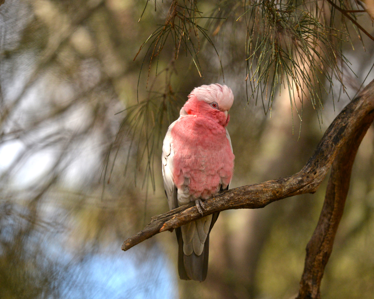
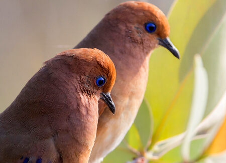
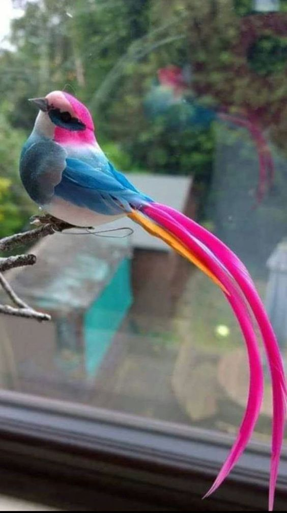
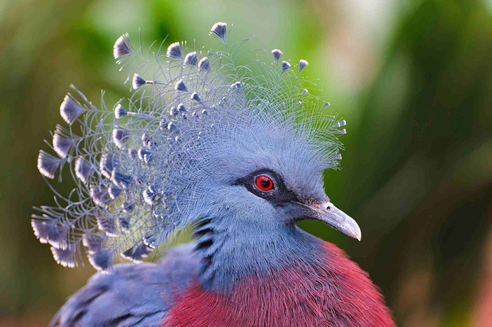

Golden Pheasants are beautiful birds mostly common in China. You can tell the difference between male and female by looking at their eyes and their color. The eyes of the male are yellow while the eyes of the female are black. They naturally weight about 550-700g and they can live up to 13 years. The golden pheasant is an omnivore. It eats most plants.

Galahs are beautiful birds commonly found in Australia and some of the offshore island areas and it was introduced to Tasmania a few years ago. In hot weather, flocks spend much time sheltering in shrubs and trees. They eat seeds, fruits, nuts, berries, roots and insects.

Blue-eyes ground dove are known for their blue eyes. You can possibly find some in the Tropical Savanna in Western Brazil, but they are critically endangered.
Blue-eyed grounded doves eat seeds and small insects in the soil.
They originate from India, although you can find them in Sri Lanka and South Asia. When they bloom their tail feathers, it's the most beatiful thing you'll ever see. They feed on small snakes, chameleons, lizards and reptiles.
Cebu Flowerpecker is one of the world's critically endangered birds. It originates from Cebu island in the Phillipines. They eat small fruits and flowers. Their lifespan is currently under study and not confirmed.
The diamond firetail is a finch that has a red bill and a red beak. It's one of the world's cutest birds. They can live up to 5 or 7 years. They eat seeds that are ripe and partially ripe. You can possibly find one in Australia.
Lilac breasted roller originates from Sub Saharan Africa. You can find some in Kenya, Zimbabwe and Namibia.The Wahlbergs eagle is one of the preditors of the lilac breasted roller. They are carnivores feeding on grasshopers, beetles,spiders, scorpions and so much more.

Birds of Paradise are just about the most beautiful birds the world has ever seen. They eat insects and fruit, but mainly fruit. They originate from Southern Africa. They live in Australia and other parts of the world.

They originate from New Guinea, but You can find them in United States of America and United Kingdom. They feed on seeds, grains and small invertebrates.